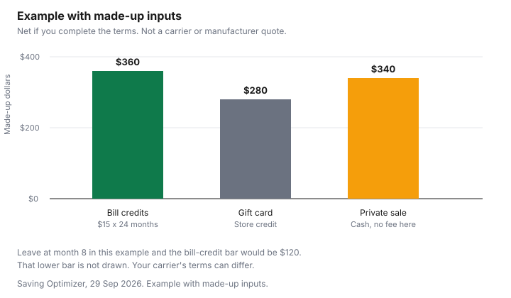

Technology · Canada
Trading In Your Old Phone in Canada: Carrier Credit vs Manufacturer Trade-In vs Selling It
When trading in a phone in Canada, compare how the value is paid: upfront credit, monthly bill credits that can stop if you cancel, a gift card, or cash from a private sale. Get condition deductions in writing, and prefer in-person exchanges when selling. A trade-in quote is a way of paying you, not only a number. Upfront credit, bill credits spread over a term, a gift card and cash from a private buyer do not survive a cancelled plan in the same way. This page compares those structures. It does not quote a live trade-in value from a carrier or a manufacturer. Check the program on the day you trade. The phone you buy next, if you buy one, is a separate decision on the upgrade guide and, if it is refurbished, on the refurbished guide.
Key takeaways
- Ask how the value is paid: upfront, monthly bill credits, a gift card, or cash. A credit you have not received yet can stop if you cancel.
- Telecom Decision CRTC 2021-98 treats a device-financing balance due on cancellation as an early cancellation fee. That is separate from a trade-in credit. Read both terms.
- Condition, a lock screen and a missing charger change a quote. Get the deductions in writing. This page does not invent dollar deductions.
- The Canadian Anti-Fraud Centre describes fake e-transfer messages, spoofed payments and QR codes aimed at people selling online. Prefer an in-person exchange.
- If the quote is nothing, wipe the phone and use your province's electronics recycling program. Check recyclemyelectronics.ca.
How trade-in credits are paid: upfront, bill credits over 24 months, gift cards
Upfront credit reduces what you pay today, or appears as a balance you can use immediately. Bill credits arrive over time, and holiday ads often describe them over 24 months.
Your offer may say a different term. Write the monthly credit and the number of months, and multiply them yourself. A gift card is store credit. It is not cash, and it can be limited to one banner. Cash from a private sale is yours when it is actually in the account, which is a higher bar than a screenshot of a pending transfer.
If the trade-in is tied to a wireless plan, cancelling the plan can end credits you have not yet received. Read the carrier's trade-in terms for that sentence. Do not assume every program claws back credits already applied. The terms say which one it is. Telecom Decision CRTC 2021-98, dated 4 March 2021, is about a different line on the same bill: it determines that the balance of a device financing plan, due when you cancel, counts as an early cancellation fee under the Wireless Code, and that financing longer than 24 months is not compliant with sections G.1 and G.2. Confirm the decision on the CRTC's site. A trade-in credit and a financing balance can both be on one upgrade. Add them only after you have read both.
| How you are paid | What you can do with it | What happens if you cancel early |
|---|---|---|
| Upfront credit | Lowers the amount due at purchase, if the offer says so | Read the terms. An upfront credit already applied is different from credits not yet issued |
| Monthly bill credits over a term | Reduces later bills, often described over 24 months. Your offer controls the term | Unpaid credits commonly stop. Check the carrier for a clawback of credits already given |
| Gift card | Spend at the stores the card names | Usually already in your hand. The limit is where it can be spent, not the phone plan |
| Cash from a private sale | Yours once the money is in the account | There is no plan to cancel. The risk is fraud before you hand the phone over |
Condition grading and what reduces your quote
Carriers and manufacturers grade cracks, battery health, and whether the phone powers on and is free of an account lock. A quote you got online can drop at the counter when the grade changes.
Ask for the grade definitions and for any deduction before you surrender the phone. This guide does not list dollar deductions, because those amounts are the program's and they were not taken from a dated quote page. Check the carrier or the manufacturer.
A charger, a cable and a case are small, and a program can still require them. Photograph the phone and the accessories you hand over. If you are also starting a new plan, keep the trade-in paperwork separate from the plan paperwork so you can see which credit belongs to which contract. A home-internet bundle is yet another discount. Do not add it into the trade-in math.
Selling privately: safe meet-ups and e-transfer scams
The Canadian Anti-Fraud Centre's merchandise page, as of 29 Sep 2026, says fraudsters target people selling on social media and classifieds. A fake e-transfer email or text asks you to accept a payment and is built to steal banking credentials.
A buyer who claims to be out of town and offers to buy the phone unseen may send a notice that the payment is pending until you ship and provide a tracking number. The Centre says that notice can be spoofed, and that no payment is pending. Another script says your account cannot receive the money until you pay a fee. The Centre's example of that fee is $500 for a so-called business account, which you are told to reimburse by a money-transfer service. An overpayment asks you to wire the extra back. A QR code can be a request for money, or a prompt for your banking login, rather than a payment to you.
The Centre's protections include verifying the web address before you click, remembering that an email or a text number can be spoofed, and never sharing a multi-factor code. For a phone, meet in person, let the buyer see the device, and confirm the money is in your account before you hand it over. Do not ship a phone against a pending message. The used-goods guide is the household version of meeting and keeping a record. This is not a list of cities with a designated safe-exchange desk. Check your local police service if you want to know whether one exists where you live.
Wiping and unlinking the phone
Do this before the trade-in desk or the buyer has the phone. Follow the maker's steps to sign out of the accounts and to turn off the activation lock.
Remove the SIM and any memory card. Then factory reset. As of 29 Sep 2026, Get Cyber Safe says a factory reset means personal data can no longer be reached through the usual screens, and that a factory reset does not truly erase the data. It says to dispose of memory cards and SIMs separately, because a reset does not wipe them. Secure erase is described there as a method that can shorten the life of a device you still hope to sell, so read that caution before you use it on a phone you are trading in.
Comparing offers with made-up inputs
Example with made-up inputs. The same imaginary phone draws three offers.
None of these figures is a carrier quote, a manufacturer quote, or a market average. The bill-credit row assumes, only inside this example, that credits stop when you cancel and that credits already issued are not clawed back. Your contract may say something else.
| Offer in the example | If you complete the terms | If you leave at month 8 |
|---|---|---|
| Bill credits, $15 a month for 24 months | $360 | $120 received. Later credits stop, in this example only |
| Gift card | $280 of store credit | $280 already received, still limited to that store |
| Private sale, cash, no fee in the example | $340 | $340 already in the account, if the sale was real |
On these made-up inputs, finishing the bill-credit term pays $360, the private sale pays $340, and the gift card pays $280 of restricted credit. Leaving at month 8 drops the bill-credit path to $120 in the example, while the gift card and the private sale have already been paid. That reversal is why the structure matters more than the largest headline. Your carrier's terms can change the month-8 column. Check the carrier.

Recycling if it's worth nothing
A phone with no quote still holds accounts and still should not go in the household garbage. Wipe it using the steps above.
Then use a provincial electronics program. As of 29 Sep 2026, recyclemyelectronics.ca says the Electronic Products Recycling Association operates regulated programs in nine provinces and asks you to select yours. This guide does not quote a fee or a payout for recycling. The handling-fee guide explains the charge you may have paid when the phone was new. It is not a cheque you get back when you recycle it.
Sources
- Canadian Anti-Fraud Centre, merchandise frauds, as of 29 Sep 2026. Fake e-transfer messages, spoofed pending payments, a $500 business-account script in the Centre's example, overpayment, and QR codes. The $500 figure is the Centre's description of a fraud script, not a real fee.
- Get Cyber Safe, taking stock of your devices, as of 29 Sep 2026. Factory reset makes data inaccessible through the user interface and does not truly erase it. Dispose of SIM and memory cards separately.
- Electronic Products Recycling Association, recyclemyelectronics.ca, as of 29 Sep 2026. Regulated programs in nine provinces. Select your province.
- Telecom Decision CRTC 2021-98, 4 March 2021, device financing and the Wireless Code. The balance due on cancellation is an early cancellation fee. Financing longer than 24 months is not compliant with sections G.1 and G.2. Confirm on the CRTC's site. Trade-in credit terms are the carrier's.
Frequently asked questions
Is it better to trade in or sell my phone?
It depends how the value is paid and whether you will stay with the plan. A bill credit you receive only if you remain a customer is not the same as cash, and a gift card is store credit, while a private sale can be more cash and more risk. This page does not quote a live trade-in value. Check the carrier, the manufacturer and a buyer you can meet.
What happens to bill credits if I cancel my plan?
Read the carrier's trade-in terms, because unpaid credits often stop when the plan stops. Telecom Decision CRTC 2021-98 says a device-financing balance due on cancellation counts as an early cancellation fee, which is separate from a trade-in credit. This guide does not state a clawback amount. Check the carrier.
How do I wipe my phone before trading it in?
Follow the maker's steps to sign out and remove the account lock, take out the SIM and any memory card, then factory reset. Get Cyber Safe says a factory reset makes personal data inaccessible through the usual screens, and that it does not truly erase the data. The same page says to dispose of SIM and memory cards separately. Do this before you hand the phone over.
How do I avoid scams selling a phone online?
The Canadian Anti-Fraud Centre warns that a fake e-transfer message can be a way to steal banking credentials, and that a buyer who will not look at the phone may send a spoofed payment. Do not ship on a pending notice, do not pay a fee in order to receive a payment, and do not scan a QR code to get paid. Meet in person, confirm the money is in your account, and check the Centre's merchandise page.
What if my phone has no trade-in value?
A zero quote is a reason to recycle it, not to leave it in a drawer signed into your accounts. Wipe it first, then use a provincial program. The Electronic Products Recycling Association says it runs regulated programs in nine provinces, and you select yours on recyclemyelectronics.ca. This guide does not quote a recycling fee.
Researched and drafted with AI assistance and fact-checked against official Canadian sources. How we create content.
Disclosure: Trade-in and buyback program offers are an offer type. Saving Optimizer may earn a commission if a partner link is added later. No partnership is claimed. An offer link does not change a quote, a bill credit or a gift card's limits. Education only.